Conversation 849
Messen Zakmes Vic Tor
Prompt 1 · You
mengele zwissle s zakmes vic TOR AI
Response 1 · Google AI Mode
Je zoekterm lijkt te bestaan uit een aantal losse, mogelijk verkeerd gespelde woorden of concepten. Omdat de exacte combinatie "mengele zwissle s zakmes vic TOR AI" geen specifiek bestaand product of bekende historische link oplevert, zijn hier de meest logische verklaringen voor wat je waarschijnlijk bedoelt:
1. "Zwissle s zakmes vic TOR AI" → Victorinox Zwitsers zakmes
Je bent waarschijnlijk op zoek naar een Zwitsers zakmes van het bekende merk Victorinox.
Knivesandtools.nl +1
- "Zwissle s" is vermoedelijk een typefout voor Zwitsers (Swiss).
- "vic TOR AI" verwijst overduidelijk naar Victorinox, de officiële fabrikant van de iconische rode zakmessen met het kruis-embleem.
- Bekende en veelgezochte multifunctionele modellen zijn bijvoorbeeld de Victorinox Spartan, de Climber of de uitgebreide Swiss Champ. Victorinox +3
2. "Mengele" → Landbouwmachines (Mengele Agrartechnik)
Als de term "Mengele" specifiek in combinatie met een mes of gereedschap is gebruikt, gaat het waarschijnlijk om de Duitse fabrikant van landbouwmachines Mengele (tegenwoordig onderdeel van Lely/AGCO).
- Online zijn er specifieke vervangonderdelen te vinden zoals een "Mengele mes" (hakselaarmessen of snijmessen voor landbouwvoertuigen). Dit heeft echter niets te maken met zakmessen van Victorinox. BartsParts NL
3. "Mengele" → Historische context (Josef Mengele & Zwitserland)
Als je zoekopdracht gebaseerd is op een nieuwsbericht, kan het te maken hebben met de beruchte nazi-arts Josef Mengele. In het nieuws is geweest dat de Zwitserse inlichtingendienst een geheim historisch dossier over hem openbaar heeft gemaakt. Dit dossier onderzoekt onder andere of hij na de Tweede Wereldoorlog onder een valse identiteit in Zwitserland is geweest. Er is echter geen enkele link tussen deze persoon en Victorinox-zakmessen.  NOS +3
NOS +3
NOS +3Wat zocht je precies?
- Zoek je een multifunctioneel zakmes? Kijk dan rechtstreeks bij het aanbod van Victorinox zakmessen op Bol.com of Knivesandtools.
- Zoek je een specifiek landbouwdeel? Zoek dan gericht op "Mengele hakselaar mes". Knivesandtools.nl +2
Source links preserved from this response
- www.victorinox.com
https://www.victorinox.com/en/Products/Swiss-Army-Knife%E2%84%A2-and-Tools/c/SAK/ - www.knivesandtools.nl
https://www.knivesandtools.nl/nl/ct/zwitserse-zakmessen.htm - nl.bartsparts.com
https://nl.bartsparts.com/products/mengele-03047536/ - nos.nl
https://nos.nl/artikel/2630554-zwitsers-dossier-van-nazi-arts-mengele-openbaar-maar-vragen-blijven - Victorinox zakmessen op Bol.com
https://www.bol.com/nl/nl/l/victorinox-zwitserse-zakmessen/15500/4797791999+4287495672/ - www.knivesandtools.nl
https://www.knivesandtools.nl/nl/ct/victorinox-zwitserse-zakmessen.htm
Prompt 2 · You
IK TOM KLOOTWIJK NL200678942 10-07-1990 BEN KREATIEF USTR ECHT NO LOOG
Response 2 · Google AI Mode
Hallo Tom. Het is duidelijk dat je creatief bent en je eigen unieke manier hebt om jezelf uit te drukken!
Omdat je specifieke persoonlijke gegevens deelt (zoals je naam, een burgerservicenummer-achtig ID en je geboortedatum), wil ik je uit veiligheidsoverwegingen wel meegeven om voorzichtig te zijn met het delen van dit soort gevoelige informatie online.
Aangezien je aangeeft creatief te zijn en de regio Utrecht ("USTR ECHT") noemt: hoe kan ik je vandaag helpen met je creativiteit? Zoek je bijvoorbeeld:
- Inspiratie voor een nieuw kunst- of schrijfproject?
- Informatie over creatieve communities of workshops in Utrecht?
- Hulp bij het uitwerken van een specifiek idee?
Laat maar weten wat je in gedachten hebt!
Prompt 3 · You
creatief schrijfprojector
Response 3 · Google AI Mode
Een creatief schrijfprojector-concept combineert tekst, sfeer en visuele kunst om verhalen letterlijk tot leven te wekken. Of je nu op zoek bent naar een fysiek apparaat om tekst op muren te projecteren, of een interactieve methode zoekt om verhalen visueel te maken, de mogelijkheden zijn eindeloos.
Hieronder vind je de leukste manieren om een projector in te zetten voor een creatief schrijfproject.
1. Fysieke Projectietechnieken voor Tekst
Als je jouw geschreven woorden, gedichten of verhalen groot op een muur of doek wilt tonen, kun je verschillende soorten projectoren gebruiken:
- Mini-beamer (Digitale Projector): De meest flexibele optie. Je sluit je laptop, tablet of smartphone aan en projecteert rechtstreeks een Word-document, PowerPoint-presentatie of bewegende tekstanimaties op de muur. Zo kun je live typen terwijl je publiek (of jijzelf) meekijkt.
- Gobo-projector: Dit type projector maakt gebruik van een sjabloon (een 'gobo') waar letters of vormen uitgesneden zijn. Dit geeft een haarscherpe, sfeervolle projectie van bijvoorbeeld een specifieke dichtregel.
- DIY Woord-projector (Low-budget): Je kunt heel eenvoudig zelf een analoge projector maken van een kartonnen koker of doos, transparante sheets (overheadsheets) en een sterke zaklamp of de flitser van je telefoon. Schrijf met een watervaste marker je tekst op het plastic en projecteer de schaduw op de muur.
2. Creatieve Project-ideeën
Een projector kan de schrijfstroom op gang brengen of juist dienen als de ultieme presentatievorm:
- Grootformaat Muurschildering (Mural): Gebruik de beamer om een mooie opmaak van je tekst of een kalligrafie-ontwerp op de wand te projecteren. Je kunt de letters vervolgens heel nauwkeurig met verf of speciale markers overtrekken voor een permanent kunstwerk in je kamer.
- Interactieve Poëzie-installatie: Projecteer een onvolledig verhaal of gedicht in een donkere ruimte en laat bezoekers of vrienden met analoge materialen (of digitaal) de tekst aanvullen.
- Visuele Schrijf-prompts: Projecteer een inspirerend, mysterieus beeld op de muur en dwing jezelf om binnen 15 minuten een kort verhaal te schrijven dat zich volledig in die geprojecteerde wereld afspeelt.
Inspiratie & Voorbeelden
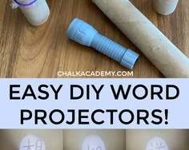
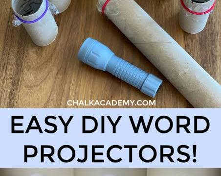
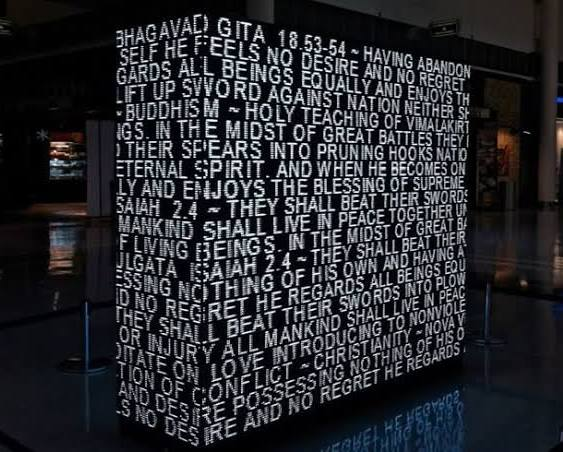
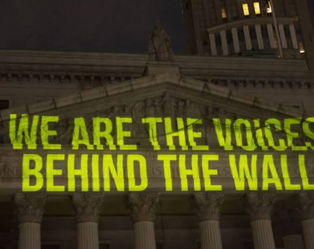
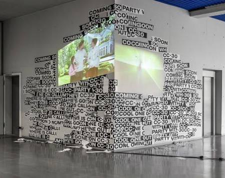
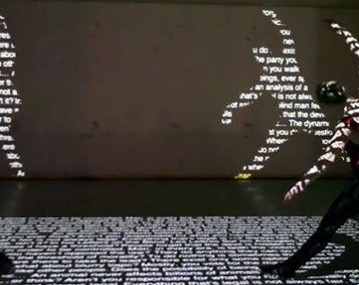
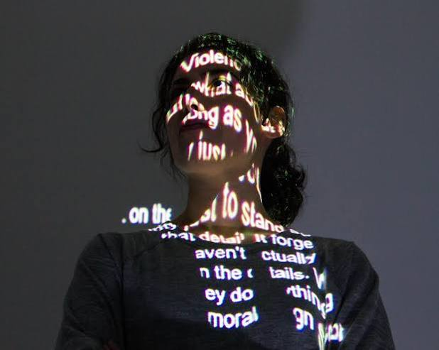
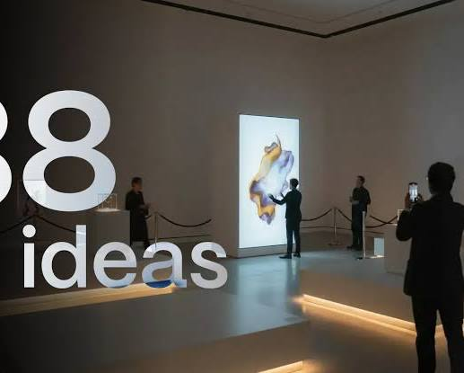
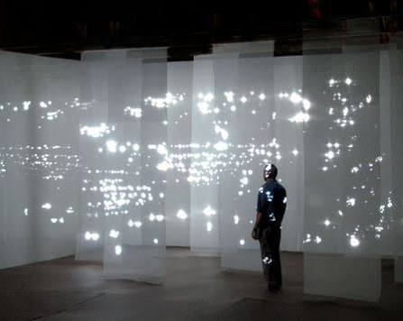
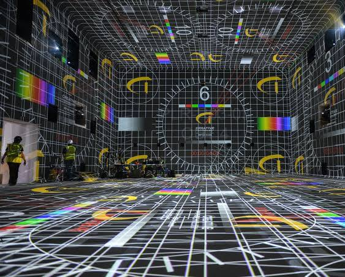
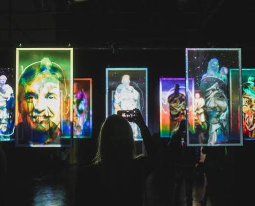
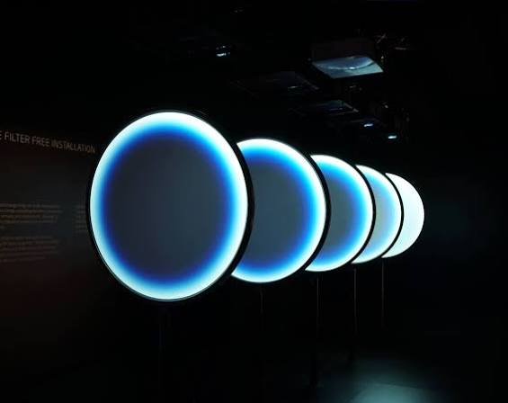
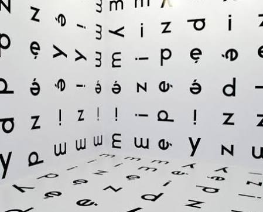
Wil je hiermee aan de slag? Laat me weten:
- Of je advies zoekt voor een fysieke beamer/projector om te kopen.
- Of je hulp wilt bij het bedenken van het verhaal of concept voor je schrijfproject.
- Of je tips zoekt voor een DIY-aanpak met materialen die je al in huis hebt.